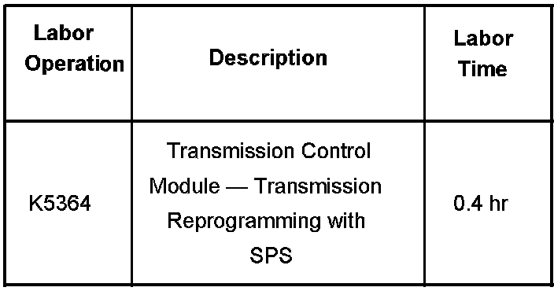

A/T Controls - Hesitation/Lack of Performance
Bulletin No.: 07-07-30-030Date: November 21, 2007
TECHNICAL
Subject:
6L80 Automatic Transmission - Hesitation, Lack of Performance, Difficult to Obtain Downshifts (Reprogram TCM)
Models:
2007-2008 Cadillac Escalade, Escalade ESV, Escalade EXT
2007-2008 GMC Sierra Denali, Yukon Denali, Yukon Denali XL
with 6L80 Automatic Transmission (RPO MYC)
Condition
Some customers may comment that the vehicle has a hesitation or lack of performance when attempting to accelerate with moderate throttle apply in the 56-113 km/h (35-70 mph) range. They may also comment that it is difficult to obtain transmission downshifts in the same 56-113 km/h (35-70 mph) range.
Correction
A revised transmission calibration has been developed to address these issues. Reprogram the transmission control module (TCM) with updated calibration files using the TIS2WEB Service Programming System (SPS) application. As always, make sure your Tech 2(R) is updated with the latest software version.
These calibrations will be "selectable" and should only be used to correct a customer concern as detailed above. Use of this calibration in a vehicle without these concerns may result in comments of busy shifting.
Warranty Information

For vehicles repaired under warranty, use the table.

Disclaimer